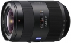

器材库 > 35mm画幅AF变焦镜头 > Vario-Sonnar T* 16-35/2.8 ZA

详细规格
镜头类型
广角变焦镜头
发布日期
2008-09-10
焦距
16mm-35mm
最大光圈
f/2.8
最小光圈
f/22
视角（对角）
[全幅/APS-C] 107-63°/83-44
镜头结构
17片/13组
非球面镜片
3片
低/超低色散镜片
2片
光圈叶片
9片
最近对焦距离
28cm
最大放大倍率
0.24
驱动马达
SSM
滤镜口径
77mm
镜头卡口
Minolta/Konica-Minolta/Sony AF
防抖
否
颜色
黑色
尺寸
83×114mm
重量
860g
hoxili2017-01-03 17:145 分
操作性 5.00耐用性 5.00性价比 5.00解像力 5.00色彩还原 5.00机械结构 5.00
无处告别2014-03-07 11:444.83 分
操作性 5.00耐用性 5.00性价比 4.50解像力 4.50色彩还原 5.00机械结构 5.00
zhzqq0072013-08-15 23:485 分
操作性 5.00耐用性 5.00性价比 5.00解像力 5.00色彩还原 5.00机械结构 5.00
四月下午2013-03-11 21:394.58 分
操作性 4.50耐用性 4.50性价比 4.50解像力 4.50色彩还原 5.00机械结构 4.50
wuping82012-06-03 15:074.92 分
操作性 5.00耐用性 5.00性价比 4.50解像力 5.00色彩还原 5.00机械结构 5.00
烟龄三十年2011-10-13 13:464.75 分
操作性 5.00耐用性 4.50性价比 5.00解像力 4.50色彩还原 5.00机械结构 4.50
larry67832011-03-11 11:334.83 分
操作性 5.00耐用性 5.00性价比 4.50解像力 5.00色彩还原 4.50机械结构 5.00
wriggle2011-02-27 12:174.92 分
操作性 5.00耐用性 5.00性价比 4.50解像力 5.00色彩还原 5.00机械结构 5.00
ericma2010-03-01 04:534.58 分
操作性 5.00耐用性 4.50性价比 4.50解像力 4.50色彩还原 4.50机械结构 4.50
lion20022010-02-27 10:113.58 分
操作性 4.50耐用性 4.00性价比 2.00解像力 2.50色彩还原 4.00机械结构 4.50
Pantrol2010-01-09 21:214.75 分
操作性 5.00耐用性 5.00性价比 4.00解像力 4.50色彩还原 5.00机械结构 5.00
木友禾2009-10-27 22:514.25 分
操作性 5.00耐用性 4.00性价比 3.00解像力 4.50色彩还原 4.50机械结构 4.50
zg072009-08-18 11:184.92 分
操作性 5.00耐用性 5.00性价比 4.50解像力 5.00色彩还原 5.00机械结构 5.00
sc2012009-07-12 22:214.67 分
操作性 4.50耐用性 5.00性价比 4.00解像力 5.00色彩还原 5.00机械结构 4.50
HWJ2009-04-19 12:534.83 分
操作性 5.00耐用性 5.00性价比 4.00解像力 5.00色彩还原 5.00机械结构 5.00
策划人2009-01-12 21:184.83 分
操作性 5.00耐用性 5.00性价比 4.50解像力 5.00色彩还原 4.50机械结构 5.00
产品图 / 样片
外观图